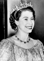

Elizabeth II
1953Getulio Vargas
31 de janeiro de 1951 a 24 de agosto de 1954Elizabeth II
1954Café Filho
24 de agosto de 1954 a 8 de novembro de 1955
Elizabeth II
1955Carlos Luz
8 de novembro de 1955 a 11 de novembro de 1955Elizabeth II
1956Nereu Ramos
11 de novembro de 1955 a 31 de janeiro de 1956Elizabeth II
1960Juscelino Kubitscheck
31 de janeiro de 1956 a 31 de janeiro de 1961Elizabeth II
1961Jânio Quadros
31 de janeiro de 1961 a 25 de agosto de 1961Elizabeth II
1961Ranieri Mazzilli
25 de agosto de 1961 a 7 de setembro de 1961Elizabeth II
1962João Goulart
7 de setembro de 1961 a 2 de abril de 1964Elizabeth II
1964Ranieri Mazzilli
2 de abril de 1964 a 15 de abril de 1964(de novo por 13 dias só)
Elizabeth II
1966Humberto Castelo Branco
15 de abril de 1964 a 15 de março de 1967Elizabeth II
1968Artur da Costa e Silva
15 de março de 1967 a 31 de agosto de 1969Elizabeth II
1970Emilio Médici
30 de outubro de 1969 a 15 de março de 1974Elizabeth II
1975Ernesto Geisel
15 de março de 1974 a 15 de março de 1979Elizabeth II
1982João Figueiredo
15 de março de 1979 a 15 de março de 1985
Elizabeth II
1987José Sarney
15 de março de 1985 a 15 de março de 1990Elizabeth II
1991Fernando Collor
15 de março de 1990 a 29 de dezembro de 1992Elizabeth II
1994Itamar Franco
29 de dezembro de 1992 a 1 de janeiro de 1995Elizabeth II
2000Fernando Henrique Cardoso
1 de janeiro de 1995 a 1 de janeiro de 2003Elizabeth II
2008Lyla
1 de janeiro de 2003 a 1 de janeiro de 2011Elizabeth II
2011Dilma Rousseff
1 de janeiro de 2003 a 31 de agosto de 2016Elizabeth II
2016Michel Miguel Temer
31 de agosto de 2016 a 1 de janeiro de 2019
Fotos da rainha: National Portrait Gallery - https://www.npg.org.uk/